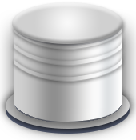

<div class="menu-heading">
    <div class="menu-heading-left col-xs-5">
        <p>
            
            <span ng-bind="secondMenuObj['deviceName']"></span>列表
        </p>
    </div>
    <div class="menu-heading-right col-xs-7">
        <div class="input-group">
            <input type="text" ng-model="searchDevice" class="form-control" placeholder="关键词" style="margin-left: 20%;width: 77%;"/>
            <span class="input-group-addon">
                <span class="glyphicon glyphicon-search"></span>
            </span>
        </div>
    </div>
    <!--新增按钮右上角-->
    <!--<button class="menu-list-button-flow" ng-click="deviceAddOnClick(secondMenuObj['areaTypeId'], secondMenuObj['areaCode'], secondMenuObj['deviceName'])">
    	<span class="fa fa-plus-circle"></span>
    </button>-->
</div>
<div class="menu-list device-list">
    <ol ng-if="secondMenuObj['deviceList'].length === 0">
        <li><p style="color: gray">暂无数据</p></li>
    </ol>
    <div class="row device-list-icon" ng-if="secondMenuObj['deviceList'].length > 0 && secondMenuObj['deviceName']==='罐'">
        <div class="col-xs-6 img-button" ng-repeat="elem in secondMenuObj['deviceList'] | orderBy:'nodeAlias' | filter:searchDevice">
            <p ng-mouseover="elem.isMouseover=true" ng-mouseleave="elem.isMouseover=false" ng-init="elem.isMouseover=false">
	            <a ng-click="deviceElemOnClick(elem)">
	                
	                =4"/>
	                <span ng-bind="elem['nodeAlias'] "></span>
	            </a>
	            <!--左上角的删除按钮-->
	            <!--<button class="menu-list-button-left" ng-show="elem.isMouseover" ng-click="deviceDeleteOnClick(elem, secondMenuObj['areaTypeId'], secondMenuObj['areaCode'], $index,secondMenuObj['deviceName'],secondMenuObj['deviceList'],elem['nodeAlias'])">
	            	<span class="fa fa-times-circle"></span>
	            </button>-->
            </p>
        </div>
    </div>
    <ol ng-if="secondMenuObj['deviceList'].length > 0 && secondMenuObj['deviceName']!=='罐'&& secondMenuObj['deviceName']!=='生产单元'">
        <li ng-repeat="elem in secondMenuObj['deviceList'] | orderBy:'nodeAlias' | filter:searchDevice">
            <p ng-mouseover="elem.isMouseover=true" ng-mouseleave="elem.isMouseover=false" ng-init="elem.isMouseover=false">
                <a ng-click="deviceElemOnClick(elem)" ng-bind="elem['nodeAlias']"></a>
                <!--对于罐的删除按钮-->
                <!--<button class="menu-list-button-follow" ng-show="elem.isMouseover" ng-click="deviceDeleteOnClick(elem, secondMenuObj['areaTypeId'], secondMenuObj['areaCode'], $index, secondMenuObj['deviceName'],secondMenuObj['deviceList'],elem['nodeAlias'])">
                	<span class="fa fa-times-circle"></span>
                </button>-->
            </p>
        </li>
    </ol>
    <ol ng-if="secondMenuObj['deviceList'].length > 0 && secondMenuObj['deviceName']!=='罐'&& secondMenuObj['deviceName']==='生产单元'">
        <li ng-repeat="elem in secondMenuObj['deviceList'] | orderBy:'cellName' | filter:searchDevice">
            <p ng-mouseover="elem.isMouseover=true" ng-mouseleave="elem.isMouseover=false" ng-init="elem.isMouseover=false">
                <a ng-click="deviceElemOnClick(elem)" ng-bind="elem['cellName']"></a>
                <!--对于罐的删除按钮-->
                <!--<button class="menu-list-button-follow" ng-show="elem.isMouseover" ng-click="deviceDeleteOnClick(elem, secondMenuObj['areaTypeId'], secondMenuObj['areaCode'], $index, secondMenuObj['deviceName'],secondMenuObj['deviceList'],elem['nodeAlias'])">
                	<span class="fa fa-times-circle"></span>
                </button>-->
            </p>
        </li>
    </ol>
</div>